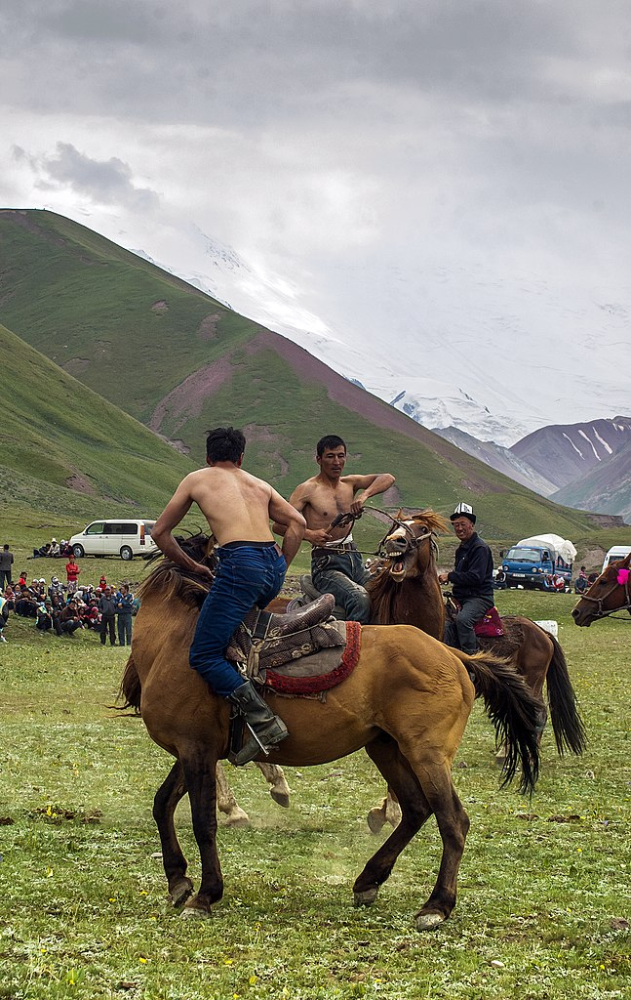

48th ICPC World Championship · Problem D
The Nomadic Games Exploratory Committee (NGEC) is floating the idea of a doubles horseback wrestling tournament with pairs of riders astride single horses. They have advertised a pilot tournament, and n eager riders have signed up to compete! So now the NGEC needs to pair the riders in order to make the tournament both fair and exciting.
The Central Asian Audaryspak League (CAAL) maintains a list of all horseback wrestlers and their ratings. From their previous experience with ordinary horseback wrestling, the NGEC has decided that the pairs are best balanced if the ratings of their two riders add up to a particular integer, s.
For obscure licensing reasons, the CAAL refuses to release the exact rating of each rider. But the NGEC has some good estimates, knowing that any rider i’s true rating ri lies in an interval [li, ui]. So the NGEC would consider pairing two riders i and j if there are ratings ri ∈ [li, ui] and rj ∈ [lj, uj] such that ri + rj = s.

The NGEC wants to form as many non-intersecting pairs of riders as possible. You need to help them.
The first line contains two integers n and s (2 ≤ n ≤ 2 · 105, 1 ≤ s ≤ 109), denoting the number of riders and the desired sum of ratings of riders in a pair. Riders are numbered 1 to n. This is followed by n lines, where the ith line contains two integers li and ui (1 ≤ li ≤ ui ≤ 109), denoting the rating range of the ith rider.
Output k, the maximum number of riding pairs that can be formed, followed by k pairs of integers, denoting the numbers of the riders forming each pair. If there are multiple ways to pair off the riders, output any one.
6 10 6 7 1 4 2 2 3 8 5 7 9 9
2 6 2 3 4